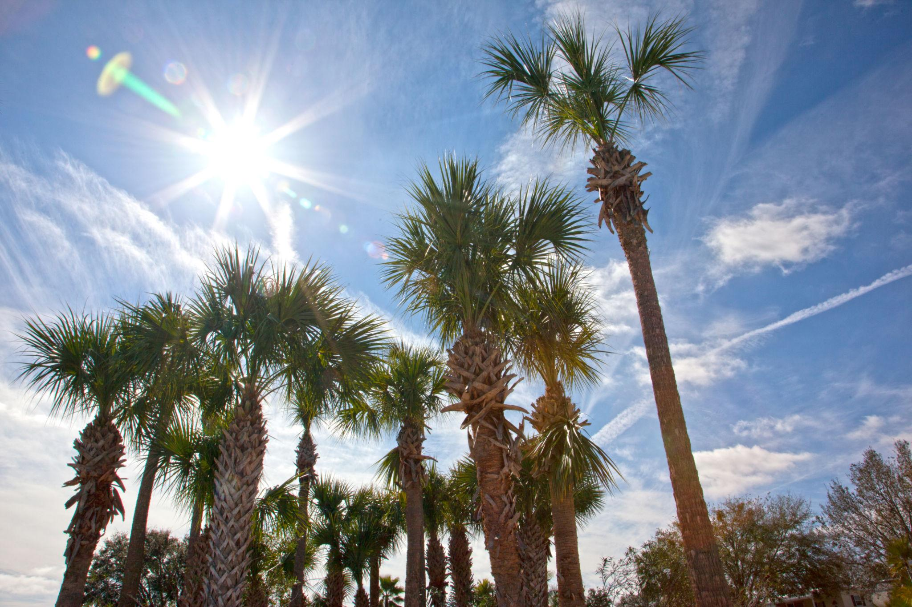
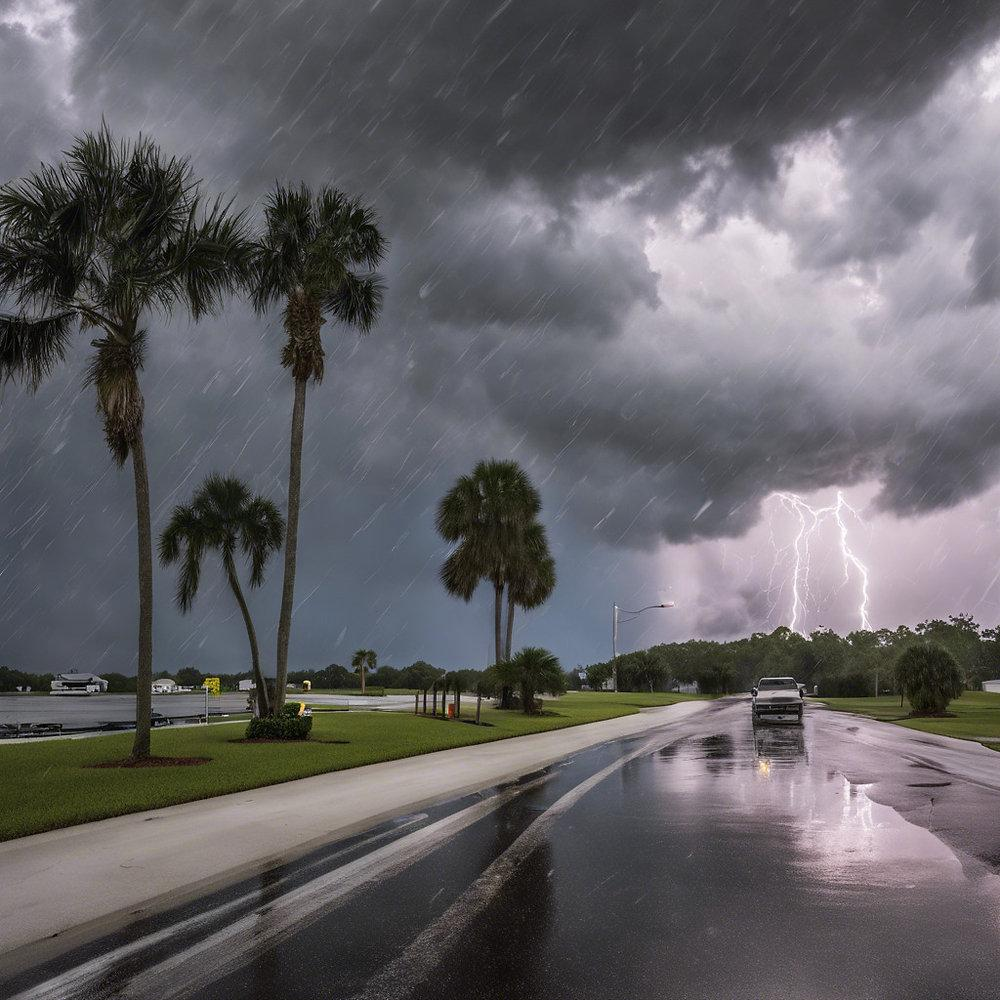
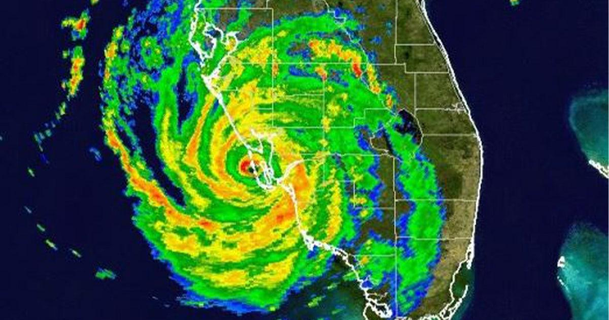
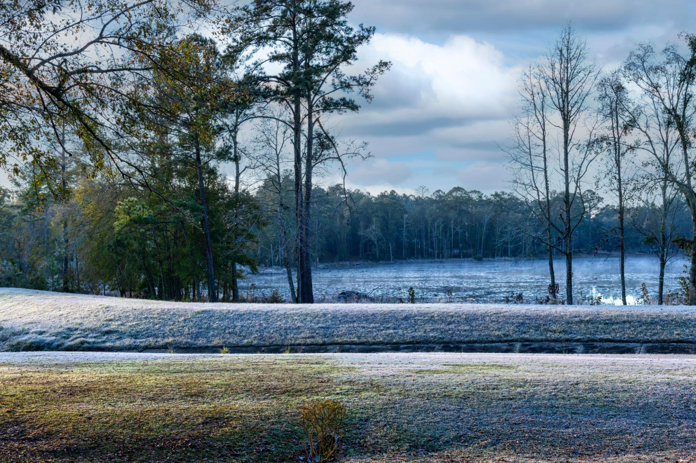

01
Heat & Humidity
Florida summers can be hot and humid. Air conditioning, hydration, shade, and planning outdoor activities around the weather can become part of everyday life.
Information and Resources for Your Move to Florida
Living With the Climate
Florida's climate is one of the reasons many people choose to live here, but relocating also means preparing for heat, humidity, frequent thunderstorms, heavy rain, and tropical weather. Conditions can also vary considerably depending on where you live in the state.

Florida summers can be hot and humid. Air conditioning, hydration, shade, and planning outdoor activities around the weather can become part of everyday life.

Thunderstorms can develop quickly, especially during the warmer months. Heavy rain, strong wind, and lightning may occur even when the day begins with sunshine.

Residents should understand hurricane preparation, evacuation information, emergency supplies, and the risks associated with the specific area where they live.
Hurricane Ian radar imagery — September 2022

Florida does not experience the same weather everywhere. North Florida can have colder winter mornings and occasional frost, while South Florida generally remains much warmer throughout the year.
Be Prepared
When researching a community, learn whether the property is in a flood or evacuation zone and understand the home's storm protection features. It is also useful to know where important documents and emergency supplies will be stored.
Preparation does not mean living in constant concern about severe weather. It means understanding the risks in your area and having a plan before one is needed.
Weather Resource
For current forecasts, watches, warnings, and tropical weather information, use an official weather source.